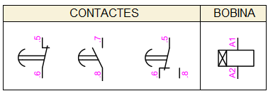
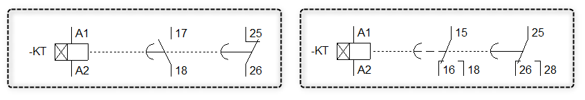
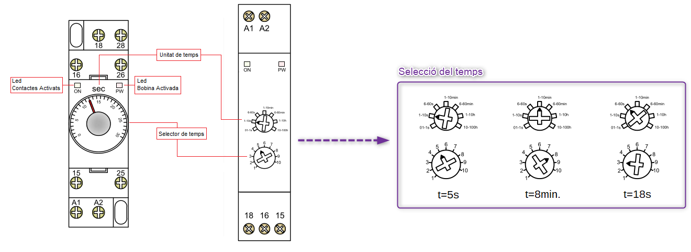
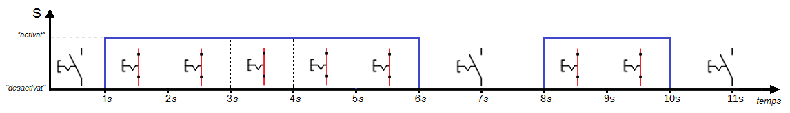
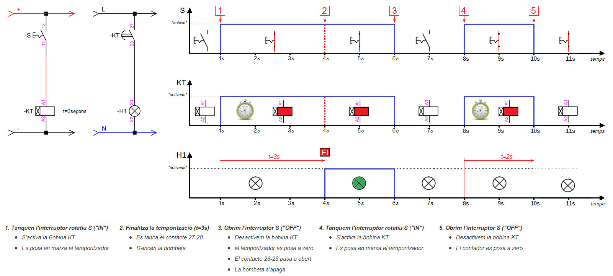

Un relé temporitzat amb retard a la connexió ("ON DELAY" en anglès), és un relé on els contactes no canvien de posició instantàniament quan la bobina queda activada, sinó que ho fan després d'un cert temps T programat per l'usuari.
UT4. Automatismes Bàsics
"ON DELAY" Amb retard a la Connexió
Simbologia

El relé temporitzador amb retard a la connexió s'identifica en un esquema elèctric mitjançant les lletres KT, on l'identificador principal K és per ser un relé i el secundari T és per ser un dispositiu de temps.
La numeració del contactes d'un relé temporitzat es fa seguint el procediment vist anteriorment pels relés:
1a Xifra: Indica l'ordre del contacte dintre del relé ( primer-1, segon-2, tercer-3, .. )
2a Xifra : Indica la funció del contacte (Funció Especial-Temporització).
- Contacte de'Obertura (NC): 5-6
- Contacte de Tancament (NO): 7-8

Si el contacte és de tipus commutat hi haurà un terminal comú (.5). Aquest terminal pertany tant al contacte tancat (.6) com al contacte obert (.8) i per tal de no repetir informació tan sols es necessari indicar la funció de contacte d'obertura (.5-.6) i no la del contacte de tancament (.7-.8), es a dir, si necessitem un contacte NO hem d'agafar els terminals .5-.8 i si necessitem un contacte NC hem d'agafar el terminals .5-.6.
Elements que caracteritzen a un Temporitzador

- Bobina: l'alimentació elèctrica de la bobina es realitza pels terminals A1 i A2 amb valors que poden ser: 230V AC 24V DC, ...
- Contactes elèctrics: la majoria dels relés temporitzats incorporen contactes de tipus commutat (dos contactes el temporitzador de l'esquerra i un contacte el temporitzador de la dreta) .
- Leds d'estat: Serveixen per indicar l'estat del relé: PW-Bobina Activada i ON-Estat temporització.
- Dial de temps: Poden utilitzar un únic dial com el temporitzador de l'esquerra o dos dials com el temporitzador de la dreta (un fer fixar l'escala i l'altre la quantitat).
Esquema Elèctric i de Connexions

Cronograma de funcionament
Per explicar el funcionament del temporitzadors s'utilitzen els cronogrames:

Un cronograma és una representació en funció del temps de l'estat d'una bombeta (encesa-apagada), d'un polsador (Activat-Repòs), d'un contacte (tancat-obert), d'una bobina (activada-desactivada),etc...

Llicenciat sota la Llicència Creative Commons Reconeixement CompartirIgual 4.0